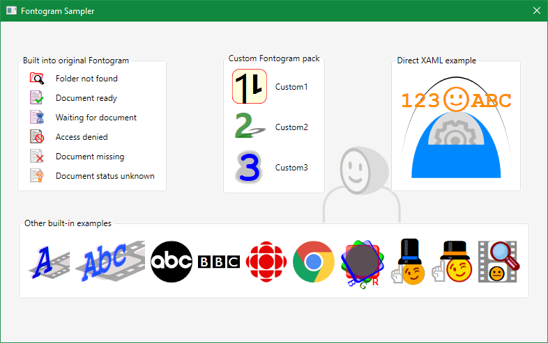
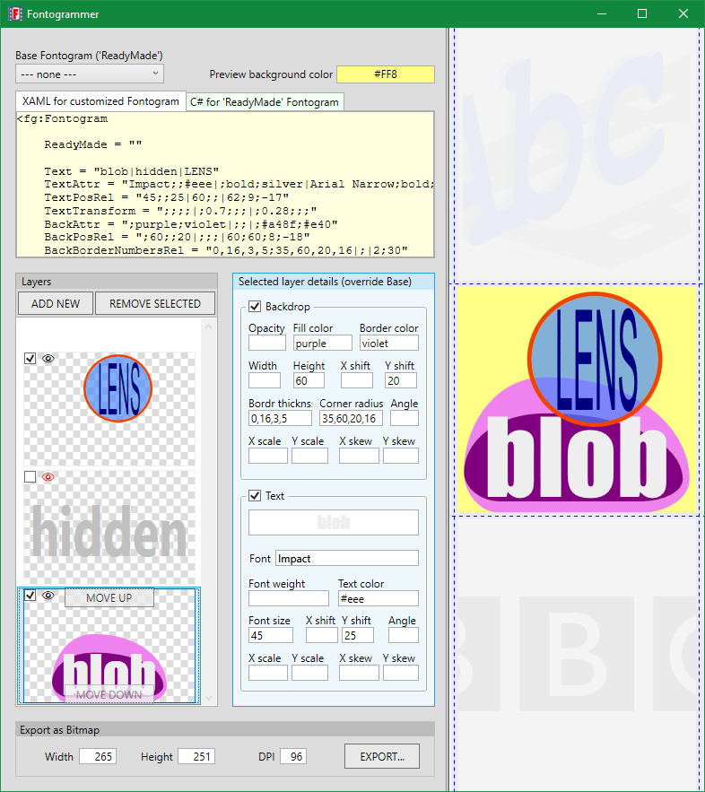

Fontogram
The above logo is based on two symbols:
A
and
🎞
(of particular Windows fonts).
Fontogram is a method, control type name, and library for generating a large variety of
such icons for Microsoft .NET WPF applications, using a simple scheme for easily combining WPF Label and
Border elements, to create text based on any installed fonts, overlayed on top of a custom backdrop.
This screenshot of the included sample app shows more examples of icons created with Fontogram:

The Fontogram control instances and the generated images are called fontograms.
The Fontogrammer application is a fontogram design tool.
You create an icon by creating an instance of the WPF control class 'Fontogram'. Specify a backdrop and a text,
using any desired attribute values to modify them from their defaults. Multiple backdrop-text pairs can be specified
in the same fontogram, as different layers.
Why Fontogram
-
Useful: potentially good looking icons created with simple XAML/C#.
-
Removes complexity and repetition in creating a set of icons with WPF methods.
-
Comfort: working with Label and Border objects, and setting their attributes
are already familiar to any WPF developer.
-
Productivity: adding an icon is as fast as creating a control and setting its attributes.
Fontogrammer makes it easy and fun to experiment with different designs.
-
Quality: the operating system is very good at rendering fonts at any size.
-
Scalability: fontograms are vector based, so no pixelation; edges always look smooth.
-
Color: works around WPF's inability to render emoji fonts in multicolor.
-
Flexibility: unlimited number of backdrop and text elements;
decent array of presentation and transformation parameters.
The provided sample
code shows how to create
custom fontograms in XAML
and
reusable fontogram packs
in C# code. The code generated for the custom fontograms includes
comments that explain the control attributes.
What fonts
Use any font that contains the characters you need and is installed on the target computers.
Windows 10 includes by default some particularly useful fonts - containing emojis, symbols, glyphs,
object icons:
- Segoe UI Emoji
- Segoe MDL2 Assets
- Webdings
- Wingdings
- Wingdings 2
- Wingdings 3
The library and sample code are accompanied by the Fontogrammer tool, which displays a live preview
of the fontogram being designed, and generates the specific XAML and C# code that you need to use.
Fontogrammer can also be used as documentation for Fontogram attributes - see the fields' tooltips.

When Fontogram
-
user interface needs some color, or pictorial aids
-
need to display icons at arbitrary sizes - especially on the small side
-
an adequate icon library is not available
-
no help from a specialized icon designer
-
must not spend much time on icons
-
simple monochrome font-based icons are not satisfactory
Enjoy!
-- Cris
2020.02.02